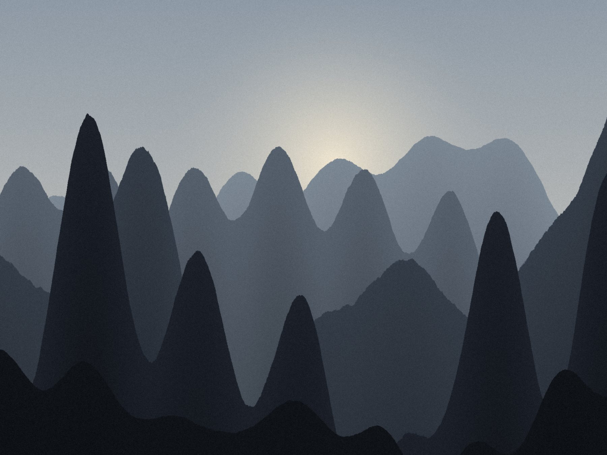
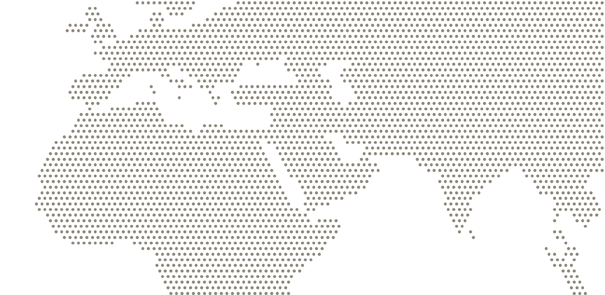

COMPOSER · FOUNDER · SYDNEY
Pick a side below. Wherever a piece of music and a place are linked, you can cross straight over.

For wind band, after Aivazovsky's 1868 painting of the gorge in the Caucasus.

Lisbon SingaporeMove across the map, or click anywhere on it. Red line: the next journey. Dashed line: Singapore to Lisbon overland. Both are sketches, not exact routes.
What I'm working out about AI agents, advertising markets and building products.